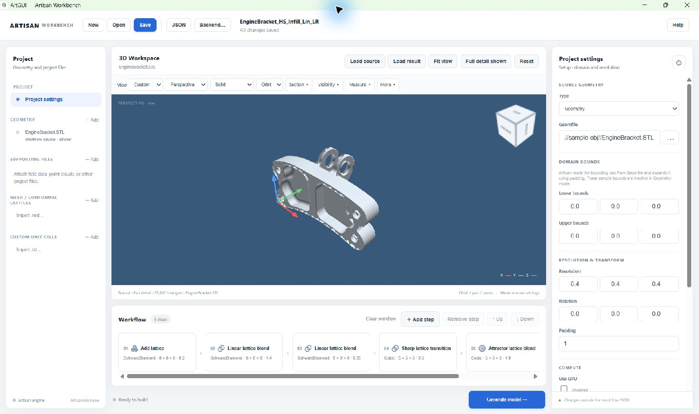

Find your way around#
The workbench keeps project files on the left, the model and operation sequence in the centre, and editable properties on the right.


Work from left to right: choose an item, inspect the model or workflow, then edit its properties.#
The main areas#
Area |
Use it to |
|---|---|
Top bar |
Create, open and save a project; open the JSON editor; choose a backend; open Help. The project name and saved/unsaved status appear here. |
Project |
Select project settings, source and reference geometry, supporting files, mesh/conformal lattice definitions and custom unit cells. |
3D Workspace |
Load source and result files, navigate around models, control layers, section the display, take measurements and save images. |
Workflow |
Select, insert, remove and reorder the operations that create the model. Scroll horizontally to reach cards outside the visible strip. |
Properties |
Edit the selected item. Its heading changes with your selection. Scroll within this panel to reach parameters below the visible area. |
Status row and run log |
Start or stop generation and inspect the backend’s progress and messages. |
Selection and changes#
Select Project settings to edit the domain, resolution and computation options. Select a workflow card to edit that operation, or a geometry entry to inspect its file and bounds. The gear button at the top of Properties returns to Project settings.
Ordinary property edits update the in-memory workflow when the field change is committed, usually by leaving the field. Choose Save to write the project to disk. The text Changes update the workflow JSON at the bottom of Properties does not mean that every edit is automatically saved to disk.
Lattice-definition forms have an explicit Apply definition action. Apply the definition before selecting a different item; see Define and reuse lattices.
Useful controls#
Control |
Action |
|---|---|
Ctrl+S |
Save the current project. |
JSON |
Open the complete workflow for text editing. |
Esc |
Close a modal dialog; the viewer also uses Escape to finish an active measurement interaction. |
+ Add step |
Open the searchable operation picker. Within its search/results, Up/Down selects an operation and Enter adds it. |
Fit view |
Frame the visible model layers. |
Reset |
Return the camera to an isometric view. |
When generation is running, workflow editing is locked. You can continue to inspect the model in the viewer. See Generate models and read the log for progress and logs.